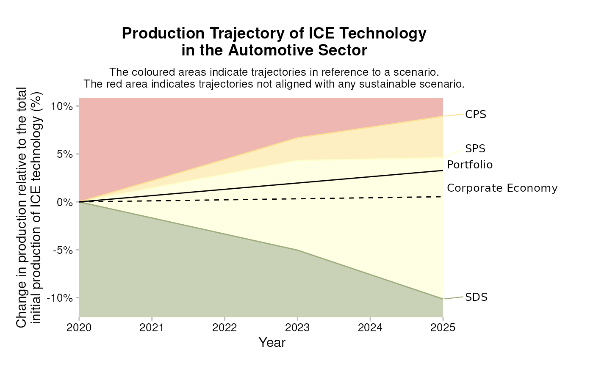
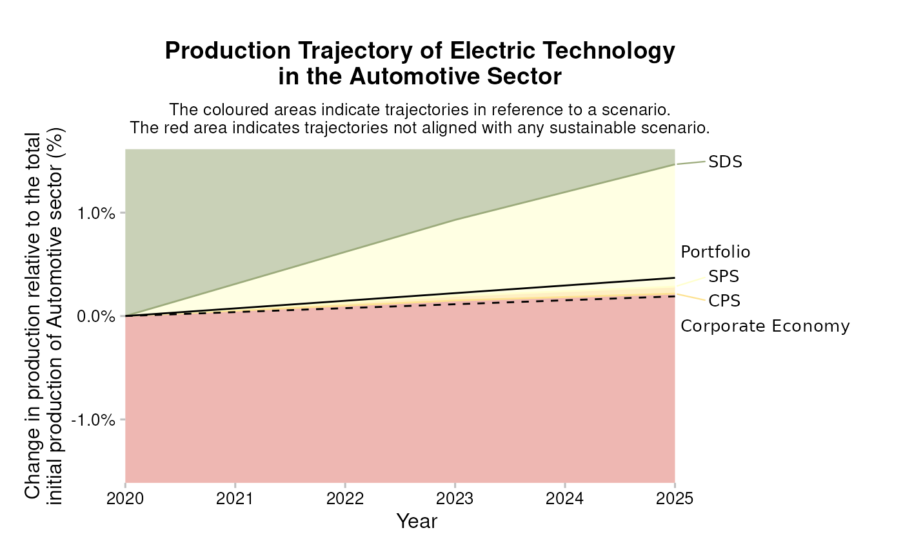
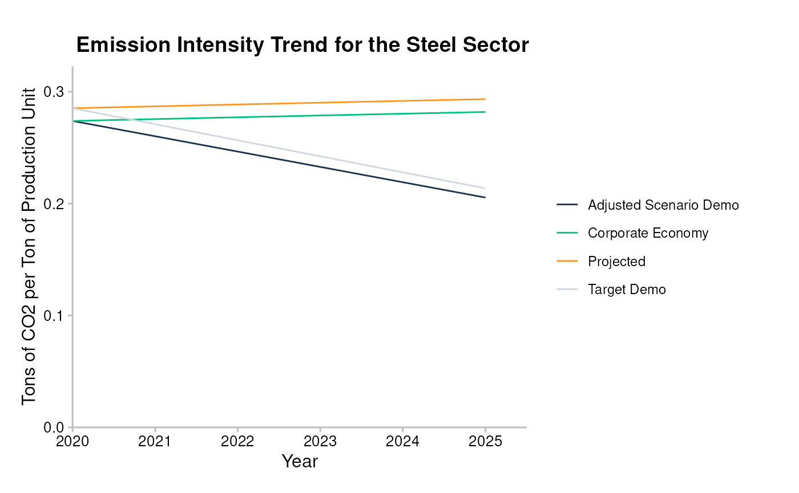

Market Share Approach
The Market Share Approach is used for allocating scenario efforts and to show how to calculate the market-share target for a given scenario.
Scenario market-shares
Say that you want to study how a portfolio would perform in a specific climate scenario. How can you allocate scenario efforts to the production profile of your portfolio? You can do that in at least two ways – by technology, or by sector.
1. Market-share by technology
We define the market-share by technology as:
We can see that this reduces to:
$$p_{i}^{tmsr}(t) = p_{i}(t_{0}) \left(1 + \frac{s_i(t) - s_{i}(t_0)}{s_i(t_0)} \right) \\ p_{i}^{tmsr}(t) = p_{i}(t_{0}) \left(1 + \frac{s_i(t)}{s_i(t_0)} -1 \right) \\ p_{i}^{tmsr}(t) = p_{i}(t_{0}) * \frac{s_i(t)}{s_i(t_0)}$$
where:
- is the scenario production for technology at time ,
- is the production allocated to the portfolio for some technology, at time , and
- is the portfolio-specific target production for that technology.
We define the “Technology Market Share Ratio” as:
This method is used to set targets for “decreasing” (i.e. brown) technologies.
Below you can see an example of how the market share approach is illustrated for a portfolio with exposure to companies that produce vehicles with internal combustion engines (ICE), a high-carbon technology that is expected to decrease in climate-ambitious scenarios. The lines separating the colors reflect the Target Market Share Ratio () for ICE vehicles for the portfolio as defined above. The most ambitious scenario in this example is the SDS scenario, which describes a decreasing amount of ICE production over time, in line with the expectations for a high-carbon technology.

2. Market-share by sector
To calculate the market-share by sector, we use the initial production of both the portfolio and scenario at the sector-level instead. where:
- is the portfolio’s total production in the sector at , and
- is the scenario total production at .
We define the “Sector Market Share Percentage” as:
This method is used to calculate targets for “increasing” (i.e. green) technologies.
Below you can see an example of how the market share approach is illustrated for a portfolio with exposure to companies that produce electric vehicles, a low-carbon technology that is expected to increase in climate-ambitious scenarios. The lines separating the colors reflect the Sector Market Share Percentage () for electric vehicles for the portfolio as defined above. The most ambitious scenario in this example is the SDS scenario, which describes an increasing amount of electric vehicle production over time, in line with the expectations for a high-carbon technology.

Overview of increasing and decreasing technologies
As stated above, the decision to use the technology market share ratio (TMSR) or the sector market share percentage (SMSP) depends on whether the technology in question is increasing or decreasing in the scenario. Generally, low-carbon or “green” technologies are treated as increasing technologies and high-carbon or “brown” technologies are treated as decreasing technologies. The table below summarizes the technologies and their expected behavior in the scenarios.
How to calculate market-share targets for a given scenario
To calculate market-share targets, you need to use the package pacta.loanbook and a number of datasets, including a “matched” dataset (loanbook + asset-level data) that you can get by following the Matching Process section of the Running the Analysis chapter of the cookbook. The datasets used here are included in the pacta.loanbook package; they are fake but show how you should structure your own data.
- Load the package.
library(pacta.loanbook)
library(dplyr) # for `%>%`- Match the loanbook to asset level data.
loanbook <- loanbook_demo
abcd <- abcd_demo
matched <- match_name(loanbook = loanbook, abcd = abcd) %>%
# WARNING: Remember to validate the output of match_name() before prioritize()
prioritize()
matched
#> # A tibble: 177 × 22
#> id_loan id_direct_loantaker name_direct_loantaker id_ultimate_parent name_ultimate_parent loan_size_outstanding loan_size_outstanding_currency loan_size_credit_limit loan_size_credit_limit_currency sector_classification_system sector_classification_direc…¹ lei_direct_loantaker isin_direct_loantaker id_2dii level sector sector_abcd name name_abcd score source borderline
#> <chr> <chr> <chr> <chr> <chr> <dbl> <chr> <dbl> <chr> <chr> <chr> <chr> <chr> <chr> <chr> <chr> <chr> <chr> <chr> <dbl> <chr> <lgl>
#> 1 L6 C304 Kassulke-Kassulke UP83 Farrell, Farrell and Farrell 185721 EUR 18570711 EUR NACE D35.11 108200TUBGG1DR0QR635 NA DL129 dire… power power Kass… Kassulke… 1 loanb… FALSE
#> 2 L13 C297 Ladeck UP69 Kuhlman-Kuhlman 200569 EUR 18718839 EUR NACE D35.11 948400P8YHB5DZHF3869 NA DL144 dire… power power Lade… Ladeck 1 loanb… FALSE
#> 3 L20 C287 Weinhold UP35 Heinz 308217 EUR 19792767 EUR NACE D35.11 NA NA DL270 dire… power power Wein… Weinhold 1 loanb… FALSE
#> 4 L21 C286 Gallo Group UP63 Giordano Group 226553 EUR 18978063 EUR NACE D35.11 961100AOJ8SCT439AL00 NA DL86 dire… power power Gall… Gallo Gr… 1 loanb… FALSE
#> 5 L22 C285 Austermuhle GmbH UP187 Hickle-Hickle 196857 EUR 18681807 EUR NACE D35.11 NA NA DL5 dire… power power Aust… Austermu… 1 loanb… FALSE
#> 6 L24 C282 Ferraro-Ferraro Group UP209 NA 309145 EUR 19802025 EUR NACE D35.11 NA NA DL80 dire… power power Ferr… Ferraro-… 1 loanb… FALSE
#> 7 L25 C281 Lockman, Lockman and Lockman UP296 Butte 266457 EUR 19376157 EUR NACE D35.11 6700006IJUUQG37Y4004 NA DL150 dire… power power Lock… Lockman,… 1 loanb… FALSE
#> 8 L26 C280 Ankunding, Ankunding and Ankunding UP67 De luca, De luca e De luca Group 199641 EUR 0 EUR NACE D35.11 NA NA DL3 dire… power power Anku… Ankundin… 1 loanb… FALSE
#> 9 L27 C278 Donati-Donati Group UP45 Christoph GmbH 197785 EUR 0 EUR NACE D35.11 463600EXRQBFGLX57N94 NA DL65 dire… power power Dona… Donati-D… 1 loanb… FALSE
#> 10 L28 C276 Ferraro, Ferraro e Ferraro SPA UP195 Franke Franke AG & Co. KG 315641 EUR -5000000 EUR NACE D35.11 NA NA DL79 dire… power power Ferr… Ferraro,… 1 loanb… FALSE
#> # ℹ 167 more rows
#> # ℹ abbreviated name: ¹sector_classification_direct_loantaker- Calculate market-share targets for production at the portfolio level.
# portfolio level targets
scenario <- scenario_demo_2020
regions <- region_isos_demo
matched %>%
target_market_share(
abcd = abcd,
scenario = scenario,
region_isos = regions
)
#> # A tibble: 1,076 × 10
#> sector technology year region scenario_source metric production technology_share scope percentage_of_initial_production_by_scope
#> <chr> <chr> <int> <chr> <chr> <chr> <dbl> <dbl> <chr> <dbl>
#> 1 automotive electric 2020 global demo_2020 projected 145649. 0.165 sector 0
#> 2 automotive electric 2020 global demo_2020 target_cps 145649. 0.165 sector 0
#> 3 automotive electric 2020 global demo_2020 target_sds 145649. 0.165 sector 0
#> 4 automotive electric 2020 global demo_2020 target_sps 145649. 0.165 sector 0
#> 5 automotive electric 2021 global demo_2020 projected 147480. 0.165 sector 0.000739
#> 6 automotive electric 2021 global demo_2020 target_cps 146915. 0.165 sector 0.000511
#> 7 automotive electric 2021 global demo_2020 target_sds 153332. 0.167 sector 0.00310
#> 8 automotive electric 2021 global demo_2020 target_sps 147258. 0.165 sector 0.000649
#> 9 automotive electric 2022 global demo_2020 projected 149310. 0.165 sector 0.00148
#> 10 automotive electric 2022 global demo_2020 target_cps 148155. 0.164 sector 0.00101
#> # ℹ 1,066 more rows- Calculate market-share targets for production at the company level.
matched %>%
target_market_share(
abcd = abcd,
scenario = scenario,
region_isos = regions,
by_company = TRUE,
weight_production = FALSE
)
#> # A tibble: 14,505 × 11
#> sector technology year region scenario_source name_abcd metric production technology_share scope percentage_of_initial_production_by_scope
#> <chr> <chr> <int> <chr> <chr> <chr> <chr> <dbl> <dbl> <chr> <dbl>
#> 1 automotive electric 2020 global demo_2020 Bernardi, Bernardi e Bernardi SPA projected 324592. 0.0759 sector 0
#> 2 automotive electric 2020 global demo_2020 Bernardi, Bernardi e Bernardi SPA target_cps 324592. 0.0759 sector 0
#> 3 automotive electric 2020 global demo_2020 Bernardi, Bernardi e Bernardi SPA target_sds 324592. 0.0759 sector 0
#> 4 automotive electric 2020 global demo_2020 Bernardi, Bernardi e Bernardi SPA target_sps 324592. 0.0759 sector 0
#> 5 automotive electric 2020 global demo_2020 Christiansen PLC projected 512438. 0.130 sector 0
#> 6 automotive electric 2020 global demo_2020 Christiansen PLC target_cps 512438. 0.130 sector 0
#> 7 automotive electric 2020 global demo_2020 Christiansen PLC target_sds 512438. 0.130 sector 0
#> 8 automotive electric 2020 global demo_2020 Christiansen PLC target_sps 512438. 0.130 sector 0
#> 9 automotive electric 2020 global demo_2020 Donati, Donati e Donati s.r.l. projected 277214. 1 sector 0
#> 10 automotive electric 2020 global demo_2020 Donati, Donati e Donati s.r.l. target_cps 277214. 1 sector 0
#> # ℹ 14,495 more rowsSectoral Decarbonization Approach
The Sectoral Decarbonization Approach (SDA) is a method for setting corporate CO2 emissions intensity reduction targets in line with climate science. This method was developed by the Science-Based Targets Initiative (SBTI), an international initiative on science-based target setting for companies.
In the context of PACTA, this methodology is used to calculate emission factor targets for homogenous sectors (i.e. sectors with no technology-level scenario pathways).
First, the distance, , between the company’s CO2 emissions intensity per unit production (or emissions factor), at some base year, , and a scenario target intensity in 2050, is calculated. The target intensity in 2050 can be taken from any relevant climate scenario:
The company’s market share parameter, , is defined as the company’s expected future activity, divided by the sector’s future activity, to reflect the expected forward-looking market share of the company. This is given as a ratio to the company’s base year market share, derived from its activity, divided by the sector’s activity in the same year, . In both cases the former is calculated per company, and the latter is determined from the climate scenario:
It should be noted that this parameter does not capture the change in the market share of the company but rather the inverse. This is useful as it equates to a decreasing parameter when the company’s market share is increasing. This equates to larger reduction efforts when the companies market share is increasing over time.
The sector decarbonization factor, is defined as:
where and are the average market and scenario emission intensities respectively, at time .
This variable captures the remaining effort needed from the market to meet the target in 2050, per year. Under the SDA assumptions the CO2 intensity for all companies in a sector converge in 2050. Note that and , indicating that 100% of the expected decarbonization efforts are still to be met at the base year and 0% should be left at 2050.
The company-level emission intensity target is then defined as:
PACTA Assumptions
The SDA applied in PACTA differs slightly from the way it is applied by the SBTI. In particular, we must align the top-down approach laid out by climate scenarios with the bottom-up asset-based company data used in the PACTA analysis.
Assumption: Market share stays constant ( = 1)
Due to the lack of quantitative data on the expected market share changes throughout the entire time horizon up to 2050. is set to 1 for all years. Under the SBTI method for calculating , there will be a higher intensity reduction target in cases where the absolute pathway of the sector exceeds the scenario target. This makes sense. However, applying this at company level is counter-intuitive:
Companies that decrease their market share would be allowed to have a higher CO2-Intensity than the average market actor. While, companies that are increasing their market share are forced to do more in terms of CO2-Intensity than ones whose market share remains constant. It follows that if a company reaches the targeted CO2-Intensity it would not be allowed to increase its share in the market. This is a desirable outcome.
Under this assumption, our target calculation reduces to:
Approximation: Adjust base year scenario emission intensity
In both the SBTI and the PACTA methodology the target emissions for the sector are taken from climate scenarios. These implement a global economy top-down approach which applies an absolute emissions value in the year 2050 and then converts this to yearly emission intensities. However, there may be discrepancies between the Scenario projected emission intensities, and the bottom-up ABCD emission intensities. To reflect this discrepancy, we adjust the scenario projections by the following factor,
yielding the adjusted scenario pathway:
This yields the final PACTA SDA target equation:
Note: and also must be re-calculated using this adjusted scenario intensity, .
Below you can see an example of how the sectoral decarbonization approach is illustrated for a portfolio with exposure to companies in the steel sector, a sector that is currently considered hard-to-abate and that does not have technology level high- and low-carbon pathways. The “target demo” line reflects the SDA target () for the emission intensity of steel production for the portfolio as defined above (the “adjusted scenario demo” line reflects the scenario pathway adjusted to the production universe covered in the ABCD, defined above as ). As expected for a hard-to-abate carbon intensive sector like steel production, the emission intensity target decreases over time, and the portfolio level and adjusted scenario level targets are slowly converging over time.

Calculating SDA Targets
To calculate SDA targets you need to use the pacta.loanbook package and a number of datasets, including a “matched” dataset (loanbook + asset-level data) that you can get get by following the Matching Process section of the Running the Analysis chapter of the cookbook. The datasets used here are included in the pacta.loanbook package; they are fake but show how you should structure your own data.
- Load the package.
- Match the loanbook to asset level data.
loanbook <- loanbook_demo
abcd <- abcd_demo
matched <- match_name(loanbook = loanbook, abcd = abcd) %>%
# WARNING: Remember to validate the output of match_name() before prioritize()
prioritize()
matched
#> # A tibble: 177 × 22
#> id_loan id_direct_loantaker name_direct_loantaker id_ultimate_parent name_ultimate_parent loan_size_outstanding loan_size_outstanding_currency loan_size_credit_limit loan_size_credit_limit_currency sector_classification_system sector_classification_direc…¹ lei_direct_loantaker isin_direct_loantaker id_2dii level sector sector_abcd name name_abcd score source borderline
#> <chr> <chr> <chr> <chr> <chr> <dbl> <chr> <dbl> <chr> <chr> <chr> <chr> <chr> <chr> <chr> <chr> <chr> <chr> <chr> <dbl> <chr> <lgl>
#> 1 L6 C304 Kassulke-Kassulke UP83 Farrell, Farrell and Farrell 185721 EUR 18570711 EUR NACE D35.11 108200TUBGG1DR0QR635 NA DL129 dire… power power Kass… Kassulke… 1 loanb… FALSE
#> 2 L13 C297 Ladeck UP69 Kuhlman-Kuhlman 200569 EUR 18718839 EUR NACE D35.11 948400P8YHB5DZHF3869 NA DL144 dire… power power Lade… Ladeck 1 loanb… FALSE
#> 3 L20 C287 Weinhold UP35 Heinz 308217 EUR 19792767 EUR NACE D35.11 NA NA DL270 dire… power power Wein… Weinhold 1 loanb… FALSE
#> 4 L21 C286 Gallo Group UP63 Giordano Group 226553 EUR 18978063 EUR NACE D35.11 961100AOJ8SCT439AL00 NA DL86 dire… power power Gall… Gallo Gr… 1 loanb… FALSE
#> 5 L22 C285 Austermuhle GmbH UP187 Hickle-Hickle 196857 EUR 18681807 EUR NACE D35.11 NA NA DL5 dire… power power Aust… Austermu… 1 loanb… FALSE
#> 6 L24 C282 Ferraro-Ferraro Group UP209 NA 309145 EUR 19802025 EUR NACE D35.11 NA NA DL80 dire… power power Ferr… Ferraro-… 1 loanb… FALSE
#> 7 L25 C281 Lockman, Lockman and Lockman UP296 Butte 266457 EUR 19376157 EUR NACE D35.11 6700006IJUUQG37Y4004 NA DL150 dire… power power Lock… Lockman,… 1 loanb… FALSE
#> 8 L26 C280 Ankunding, Ankunding and Ankunding UP67 De luca, De luca e De luca Group 199641 EUR 0 EUR NACE D35.11 NA NA DL3 dire… power power Anku… Ankundin… 1 loanb… FALSE
#> 9 L27 C278 Donati-Donati Group UP45 Christoph GmbH 197785 EUR 0 EUR NACE D35.11 463600EXRQBFGLX57N94 NA DL65 dire… power power Dona… Donati-D… 1 loanb… FALSE
#> 10 L28 C276 Ferraro, Ferraro e Ferraro SPA UP195 Franke Franke AG & Co. KG 315641 EUR -5000000 EUR NACE D35.11 NA NA DL79 dire… power power Ferr… Ferraro,… 1 loanb… FALSE
#> # ℹ 167 more rows
#> # ℹ abbreviated name: ¹sector_classification_direct_loantaker- Calculate SDA targets for CO2 emissions intensities at the portfolio level:
co2_intensity <- co2_intensity_scenario_demo
regions <- region_isos_demo
matched %>%
target_sda(
abcd = abcd,
co2_intensity_scenario = co2_intensity,
region_isos = regions
)
#> Warning: Removing rows in abcd where `emission_factor` is NA
#> # A tibble: 220 × 6
#> sector year region scenario_source emission_factor_metric emission_factor_value
#> <chr> <dbl> <chr> <chr> <chr> <dbl>
#> 1 cement 2020 advanced economies demo_2020 projected 0.0230
#> 2 cement 2020 developing asia demo_2020 projected 0.0595
#> 3 cement 2020 global demo_2020 projected 0.664
#> 4 cement 2021 advanced economies demo_2020 projected 0.0232
#> 5 cement 2021 developing asia demo_2020 projected 0.0594
#> 6 cement 2021 global demo_2020 projected 0.665
#> 7 cement 2022 advanced economies demo_2020 projected 0.0233
#> 8 cement 2022 developing asia demo_2020 projected 0.0592
#> 9 cement 2022 global demo_2020 projected 0.666
#> 10 cement 2023 advanced economies demo_2020 projected 0.0235
#> # ℹ 210 more rows- Calculate SDA targets for CO2 emissions intensities at the company level:
co2_intensity <- co2_intensity_scenario_demo
regions <- region_isos_demo
matched %>%
target_sda(
abcd = abcd,
co2_intensity_scenario = co2_intensity,
region_isos = regions,
by_company = TRUE
)
#> Warning: Removing rows in abcd where `emission_factor` is NA
#> # A tibble: 966 × 7
#> sector year region scenario_source name_abcd emission_factor_metric emission_factor_value
#> <chr> <dbl> <chr> <chr> <chr> <chr> <dbl>
#> 1 cement 2020 advanced economies demo_2020 Milani, Milani e Milani SPA projected 0.714
#> 2 cement 2020 developing asia demo_2020 Heidrich GmbH projected 0.675
#> 3 cement 2020 developing asia demo_2020 Hovel Hovel GmbH & Co. KGaA projected 0.622
#> 4 cement 2020 global demo_2020 Battaglia-Battaglia Group projected 0.626
#> 5 cement 2020 global demo_2020 Bergstrom, Bergstrom and Bergstrom projected 0.607
#> 6 cement 2020 global demo_2020 Carsten GmbH & Co. KG projected 0.625
#> 7 cement 2020 global demo_2020 Crist-Crist projected 0.655
#> 8 cement 2020 global demo_2020 Durgan-Durgan projected 0.702
#> 9 cement 2020 global demo_2020 Eberhardt Eberhardt GmbH projected 0.685
#> 10 cement 2020 global demo_2020 Geissler Geissler AG & Co. KGaA projected 0.637
#> # ℹ 956 more rowsPREVIOUS CHAPTER: Advanced Use Cases